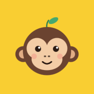

Chimponto
Sistema visual v1 · mascote Bolota · paleta CachoLogo e ícone
O ícone é o rosto da Bolota sobre banana. A folha no topo é o detalhe que sobrevive em 24 px. O logotipo é a palavra em Fredoka 600, sempre em foreground; o amarelo fica no ícone.



"icons": [
{ "src": "/icons/icon-192.png", "sizes": "192x192", "type": "image/png", "purpose": "any" },
{ "src": "/icons/icon-512.png", "sizes": "512x512", "type": "image/png", "purpose": "any" },
{ "src": "/icons/icon-maskable-512.png", "sizes": "512x512", "type": "image/png", "purpose": "maskable" }
],
"theme_color": "#F9CE32",
"background_color": "#FBF8F1"
Tipografia
Fredoka dá a personalidade nos títulos. Manrope cuida de todo o resto, inclusive horas e dinheiro, sempre com tabular-nums. Números nunca usam Fredoka.
Tokens · shadcn/ui
Cole em globals.css. Os tokens positive, negative, warning, pending e banana são extras e entram no Tailwind pelo bloco @theme inline. Todos os pares de texto passam WCAG AA; os números estão em 1d.
:root {
--radius: 1rem;
--background: oklch(0.985 0.008 90);
--foreground: oklch(0.25 0.035 55);
--card: oklch(1 0 0);
--card-foreground: oklch(0.25 0.035 55);
--popover: oklch(1 0 0);
--popover-foreground: oklch(0.25 0.035 55);
--primary: oklch(0.865 0.165 92); /* banana: só preenchimento */
--primary-foreground: oklch(0.25 0.035 55);
--secondary: oklch(0.955 0.014 85);
--secondary-foreground: oklch(0.25 0.035 55);
--muted: oklch(0.955 0.014 85);
--muted-foreground: oklch(0.48 0.03 60);
--accent: oklch(0.955 0.014 85);
--accent-foreground: oklch(0.25 0.035 55);
--destructive: oklch(0.52 0.19 27);
--border: oklch(0.905 0.018 85);
--input: oklch(0.87 0.02 85);
--ring: oklch(0.62 0.13 80);
--positive: oklch(0.5 0.13 150);
--positive-foreground: oklch(0.985 0.008 90);
--negative: oklch(0.52 0.19 27);
--negative-foreground: oklch(0.985 0.008 90);
--warning: oklch(0.52 0.14 58);
--warning-foreground: oklch(0.985 0.008 90);
--pending: oklch(0.5 0.12 305);
--pending-foreground: oklch(0.985 0.008 90);
--banana: oklch(0.865 0.165 92);
}
.dark {
--background: oklch(0.185 0.012 60);
--foreground: oklch(0.955 0.012 85);
--card: oklch(0.225 0.014 60);
--card-foreground: oklch(0.955 0.012 85);
--popover: oklch(0.225 0.014 60);
--popover-foreground: oklch(0.955 0.012 85);
--primary: oklch(0.865 0.165 92);
--primary-foreground: oklch(0.22 0.03 55);
--secondary: oklch(0.27 0.016 60);
--secondary-foreground: oklch(0.955 0.012 85);
--muted: oklch(0.27 0.016 60);
--muted-foreground: oklch(0.74 0.025 75);
--accent: oklch(0.27 0.016 60);
--accent-foreground: oklch(0.955 0.012 85);
--destructive: oklch(0.72 0.16 25);
--border: oklch(0.32 0.018 60);
--input: oklch(0.38 0.02 60);
--ring: oklch(0.8 0.14 88);
--positive: oklch(0.78 0.15 150);
--positive-foreground: oklch(0.185 0.012 60);
--negative: oklch(0.72 0.16 25);
--negative-foreground: oklch(0.185 0.012 60);
--warning: oklch(0.8 0.13 72);
--warning-foreground: oklch(0.185 0.012 60);
--pending: oklch(0.76 0.1 305);
--pending-foreground: oklch(0.185 0.012 60);
--banana: oklch(0.865 0.165 92);
}
@theme inline {
--font-display: "Fredoka", ui-rounded, sans-serif;
--font-sans: "Manrope", ui-sans-serif, system-ui, sans-serif;
--color-positive: var(--positive);
--color-positive-foreground: var(--positive-foreground);
--color-negative: var(--negative);
--color-negative-foreground: var(--negative-foreground);
--color-warning: var(--warning);
--color-warning-foreground: var(--warning-foreground);
--color-pending: var(--pending);
--color-pending-foreground: var(--pending-foreground);
--color-banana: var(--banana);
}
/* badges com fundo tingido: bg-positive/12 text-positive (passa AA nos dois temas) */
body { font-variant-numeric: tabular-nums; }
Mascote · Bolota
Só círculos e elipses, sem contorno, um tom de sombra por material. Sempre sobre um círculo banana, que separa a pelagem marrom do fundo escuro. Abaixo de 40 px, usar o ícone (só o rosto). Cada estado é um SVG gerado por mascote.js.
#6B4330
#F3CDA6
#FFD23F
#46A86F
#E2574C
#2B1B13
Ícones e indicador de progresso
Interface 100% lucide-react: traço 2, 20 px por padrão (24 na ação principal, 16 em linhas densas), sempre currentColor. O mascote nunca substitui um ícone de função. A única peça própria é o cacho, que mostra as batidas do dia.
Componentes · variações do shadcn
Mesmos componentes do shadcn/ui com variantes novas. Alvo de toque mínimo de 44 px; a ação principal tem 56–60 px e fica na metade de baixo da tela.
// components/ui/button.tsx (trecho do cva)
variant: {
default: "bg-primary text-primary-foreground font-extrabold
shadow-[inset_0_-3px_0_theme(colors.primary/70%)]
active:translate-y-px",
secondary: "bg-muted text-foreground",
outline: "border border-input bg-card",
link: "underline underline-offset-4",
destructive: "bg-destructive text-white",
},
size: {
default: "h-11 px-4 rounded-[14px]", // 44 px
lg: "h-14 rounded-2xl text-base", // 56 px
ponto: "h-15 w-full rounded-[18px] text-[17px] gap-3",
icon: "size-11 rounded-xl",
}
// components/ui/badge.tsx (trecho do cva)
variant: {
positive: "bg-positive/12 text-positive",
negative: "bg-negative/12 text-negative",
warning: "bg-warning/12 text-warning",
pending: "bg-pending/12 text-pending",
neutral: "bg-muted text-muted-foreground",
today: "bg-primary text-primary-foreground",
}
// components/saldo.tsx
// sempre sinal + cor; − é U+2212
export function Saldo({ min }: { min: number }) {
const s = min > 0 ? "+" : min < 0 ? "−" : "±";
...
}
Notificações push
Disparadas 10 min antes do horário previsto. O título traz a graça; o corpo traz o horário, sempre. No iPhone, só funcionam com o app instalado na tela de início.